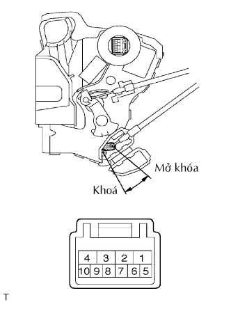
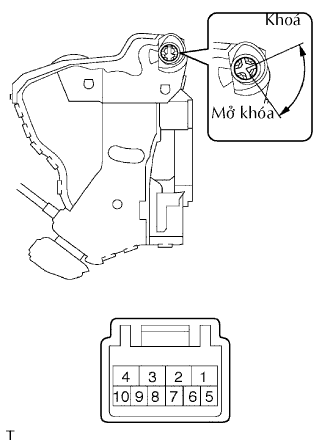
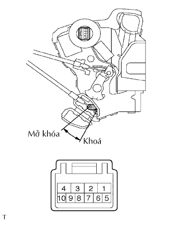

KHOÁ CỬA TRƯỚC > KIỂM TRA |
| 1. KIỂM TRA KHOÁ CỬA TRƯỚC TRÁI |
|  |
Cấp điện áp ắc quy vào khóa cửa và kiểm tra hoạt động của môtơ khóa cửa.
| Điều kiện đô | Điều kiện tiêu chuẩn |
| Cực dương ắc quy (+) → Cực 4 Cực dương ắc quy (+) → Cực 1 | Khoá |
| Cực dương ắc quy (+) → Cực 1 Cực dương ắc quy (+) → Cực 4 | Mở khoá |
|  |
Đo điện trở của công tắc khóa và mở khóa cửa.
| Nối dụng cụ đo | Tình trạng khoá cửa | Điều kiện tiêu chuẩn |
| 9 - 7 | Khoá | Dưới 1 Ω |
| 9 -7, 10 - 7 | OFF | 10 kΩ trở lên |
| 10 - 7 | Mở khoá | Dưới 1 Ω |
w/ Hệ thống chống trộm:
Đo điện trở của công tắc phát hiện.
| Nối dụng cụ đo | Tình trạng công tắc | Điều kiện tiêu chuẩn |
| 7 - 8 | Khoá | 10 kΩ trở lên |
| 7 - 8 | Mở khoá | Dưới 1 Ω |
| 2. KIỂM TRA KHOÁ CỬA TRƯỚC PHẢI |
|  |
Cấp điện áp ắc quy vào khóa cửa và kiểm tra hoạt động của môtơ khóa cửa.
| Điều kiện đô | Điều kiện tiêu chuẩn |
| Cực dương ắc quy (+) → Cực 4 Cực dương ắc quy (+) → Cực 1 | Khoá |
| Cực dương ắc quy (+) → Cực 1 Cực dương ắc quy (+) → Cực 4 | Mở khoá |
| 3. KIỂM TRA CÔNG TẮC ĐIỀU KHIỂN CỬA |
 |
Đo điện trở của công tắc điều khiển cửa.
| Nối dụng cụ đo | Tình trạng công tắc | Điều kiện tiêu chuẩn |
| 5 - 3 | Khoá | Dưới 1 Ω |
| 5 - 3, 8- 3 | OFF | 10 kΩ trở lên |
| 8 - 3 | Mở khoá | Dưới 1 Ω |